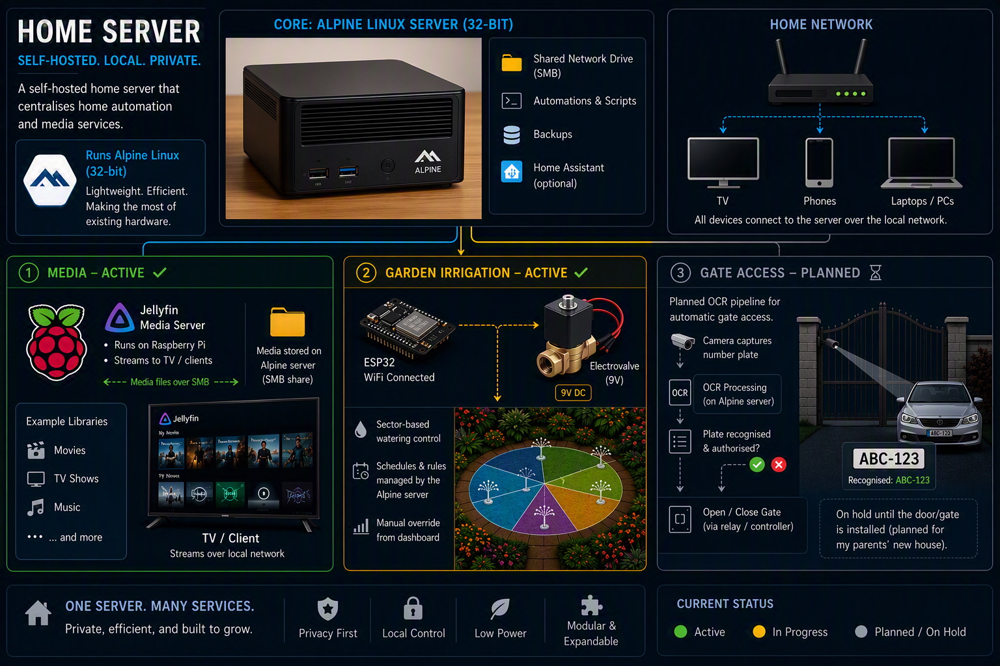
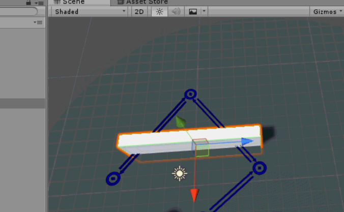
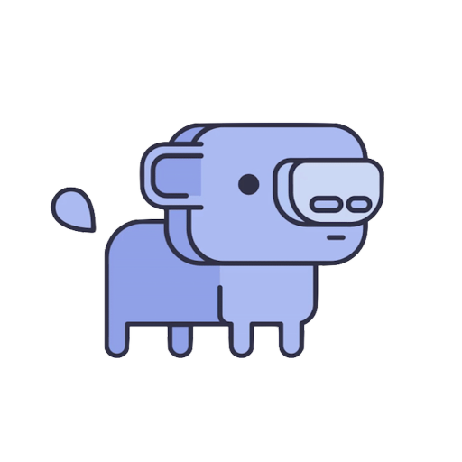
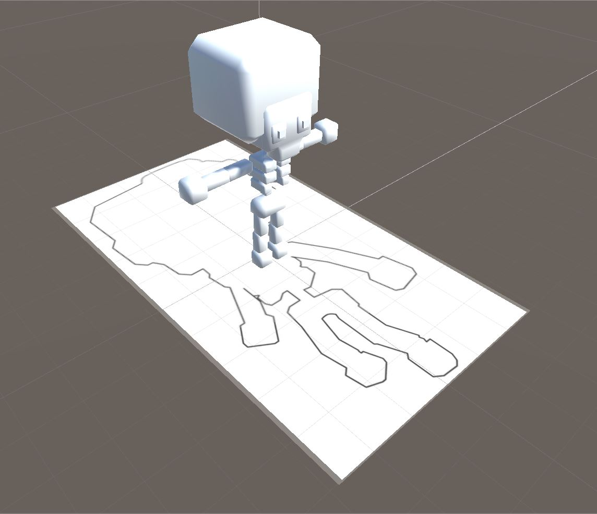
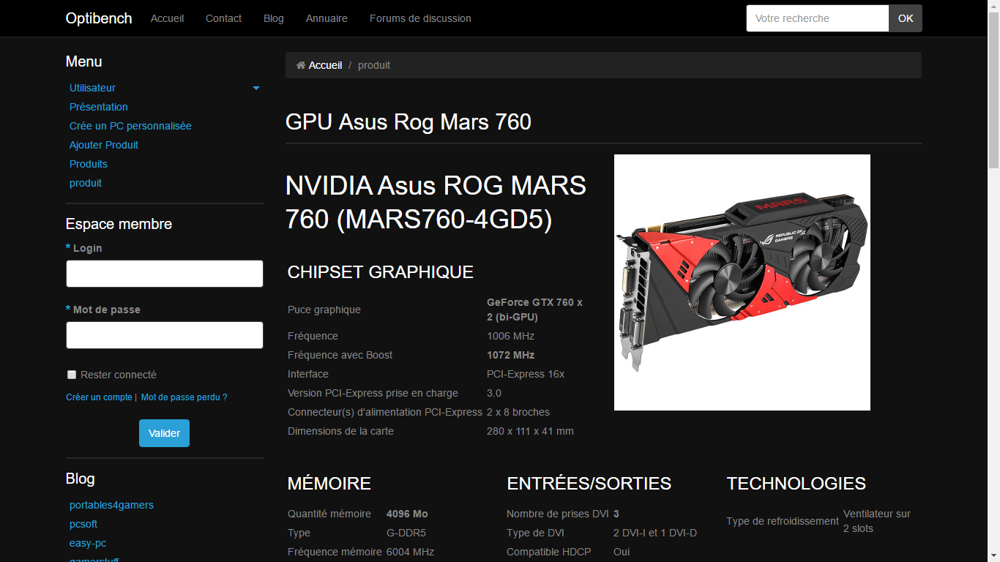

PROJECTS
ONGOING
HOME SERVER HUB
Ongoing
A self-hosted home server that centralises home automation and media services. The main machine runs Alpine Linux (32-bit) to make use of hardware I already had.
The project covers several areas, each at a different stage:

Illustration generated with AI
Unity
2016 - Ongoing
In order to use Unity3D in personal projects,
I followed different Unity tutorials including the making of a space shooter game.
Currently, I am testing the free tools offered in the unity store.

ARTIFICIAL INTELLIGENCE
WUMPUS
2017
This project aims to develop an artificial intelligence that will participate
in the game called "The World of Wumpus". Artificial intelligence will have to
move around the playground to reach the treasure without getting caught by the Wumpus.
This one is a monster that defends its cave, this one being the playground.
In this work the visual appearance was not the main goal to ask.
The idea was to allow the AI to move according to the data it receives by moving from box to box.
The smell of Wumpus allows the AI to recognize its presence on one of the adjacent boxes.
The flicker of gold signals the presence of the treasure in the box and thus indicates to the AI the achievement of its objective.

Augmented Reality
2018
In this Reconstructed Professional Situation (MSPR),
the main goal was to display a 3D model associated with an image that children could color.
The application should therefore be able to retrieve the colors present on the drawing and apply them to the 3D model.
Being intended for a very young audience, we therefore thought of adding an additional functionality:
interaction with the 3D model.
To illustrate this idea, we added a target that the 3D model will follow.

APPLICATIONS
OPTICOOK
2016
Application in C# using the concept of object-oriented programming.
The Microsoft Entity Framework is therefore used to create an application to manage an individual's food stock,
informing the user of the impending expiration dates of each product while
offering recipes selected based on the amount of products in stock.

OPTIBENCH
2016
During this school project, the goal was to create a web application with the Symfony Framework.
With the team I was in, we created a web application that lists different computer component and
allows a client to compare them and thus set up a computer.
